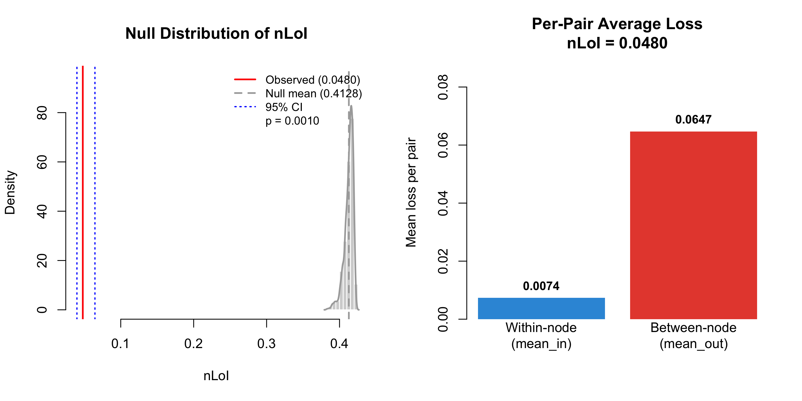

Not association — agreement.
e2tree is interpretive, not predictive. Its quality is fidelity to the ensemble it explains, never accuracy against the outcome. Measuring that fidelity properly needs a scale-sensitive measure of agreement.
The ensemble matrix O holds continuous values in (0, 1); the e2tree matrix Ô is crisp and block-diagonal, zero for every pair the tree separates. Two matrices can correlate perfectly and still disagree systematically — the classic correlation vs. concordance distinction of Bland & Altman. A correlation-based statistic such as the Mantel test is scale-invariant, so it is blind to exactly the discrepancy that matters here.
The Loss of Interpretability answers the right question. It is a direct, scale-sensitive divergence between the two co-occurrence matrices:
Each squared discrepancy is normalised by , which makes every contribution dimensionless and concentrates the measure's sensitivity on high-proximity pairs: failures to reconstruct a strong association incur a substantial penalty, while near-zero co-occurrences contribute little.
Dividing by the number of unique pairs yields the normalized LoI, an average per-pair discrepancy that is comparable across datasets of any size:
The nLoI is bounded, non-negative, symmetric, permutation-invariant, and vanishes if and only if the reconstruction is exact. It is a robustified Neyman-type statistic, and sits inside the Cressie–Read power divergence family at .
Aria, M., Gnasso, A., & Iorio, C. A Family of Divergence Measures for Evaluating the Reconstruction Quality of Explainable Ensemble Trees.
Submitted to Computational Statistics & Data Analysis.
eValidation() complements the nLoI with four measures, each capturing a distinct structural facet of approximation quality, all under one permutation-testing framework:
- · Hellinger distance
- · wRMSE — weighted root mean squared error
- · RV coefficient
- · SSIM — structural similarity index
The Mantel test remains available via test = "mantel" for association, not agreement.
Where — and why — reconstruction fails.
The nLoI's distinctive property is that it splits cleanly in two. Let be the pairs the e2tree groups together and the pairs it separates. Because separated pairs have by construction, their contribution collapses to , and the statistic decomposes exactly:
The two sets have vastly different cardinalities, so the raw totals are not comparable. The per-pair averages are:
This is a diagnostic no correlation-based measure — the Mantel test included — can provide. A scalar association statistic tells you the reconstruction is "good" or "poor"; it cannot tell you which of the two failure modes you are looking at.
High mean out (> 0.3) — the partition is too coarse
The tree is separating pairs the ensemble considers similar. Grow more terminal nodes or relax the pruning constraints.
High mean in (> 0.1) — the calibration is off
Split boundaries are well placed, but within-node proximity values deviate from the ensemble's. Usually the inherent fuzzy-to-crisp transition.
Both low — a faithful reconstruction
The partition is well placed and the calibration is accurate. The explanations you read off the tree are the ensemble's, not the surrogate's.

plot() on an eValidation object. Top: ensemble proximity O (left) against e2tree proximity Ô (right) — note the fuzzy background against the crisp blocks. Bottom: the observed nLoI against its permutation null distribution, and the within- versus between-node decomposition.
localLoI — fidelity, one observation at a time.
A single global number cannot tell you which explanations to trust. localLoI() disaggregates the nLoI down to each node and each observation. For observation i:
A high flags an observation whose local explanation — its path, its neighbours, its attribution — is less trustworthy. Crucially, the per-observation values average back exactly to the published statistic, . Local LoI is an exact spatial decomposition, not a separate metric.
The leaf partition is recovered directly from the block structure of Ô — two observations share a leaf if and only if — so the decomposition needs nothing but the two matrices.
